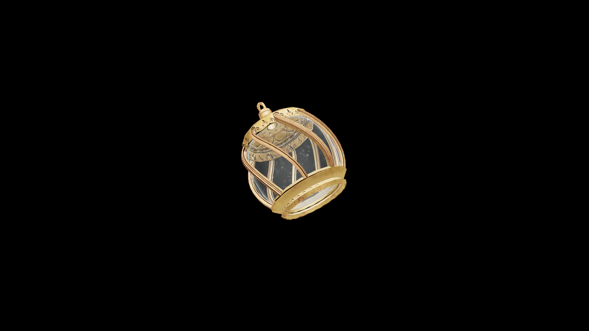

Average Potion Of Restore Axe
This potion revitalizes weary arms and renews the instinct for battle, restoring lost proficiency and endurance in the art of the axe.

Item stats
Item stats
| Weight | 1.0 |
|---|---|
| Value | 35.0 |
Magic Effects
Magic Effects